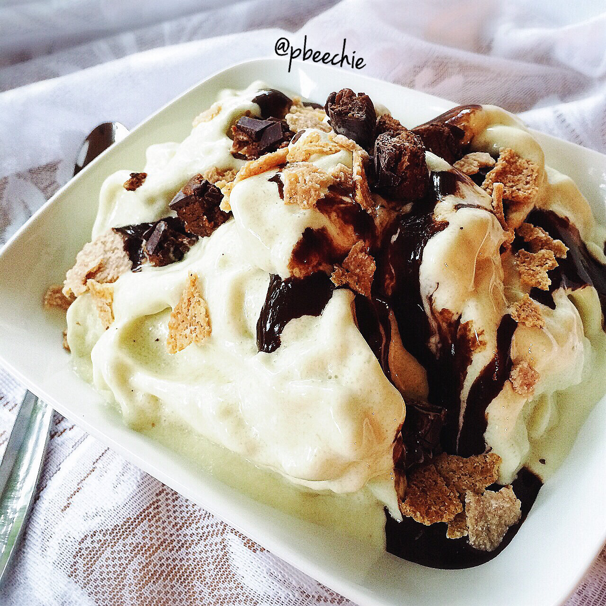

Mint Chocolate Protein Soft Serve
Big + comforting bowl of mint chocolate chip cellucor protein soft serve yesterday because I was functioning at about 15%; ice cream cures all. It's topped with chopped cocoa almond square bars, paleo Julian bakery brand coconut cereal flakes, and a healthy chocolate syrup (unsweetened cocoa powder, unsweetened almond milk, and stevia). Heaven. Followed by vegetating in bed with Jesse + endless adventure time episodes + Epic Meal Empire episodes. I've mentioned how I wasn't feeling too great these past weeks...and it's not getting better. I can't deny that it does indeed get marginally better with rest. But a lot of rest. I'm talking 10-11 hours of sleep for 4+ days. I just don't have time for that... Last week I felt crummy 6/7 days. Thursday was my one true "good" day and I was ecstatic. I feel pain everywhere... Sometimes nausea. Tuesday was so awful that I went home from work and literally slept all day long. Moving hurts. It's worst in the morning times. I am able to go to the gym 4-5 days a week in the evening, and during that time I have to be very cautious but it usually helps for the time being to move around and stretch and sit in the sauna a lot. But the next day, I feel crummy again. It's mostly my neck/upper back these days, but it used to be my legs/lower back. I get near-migraines (I've had worse before so I'm thankful that I don't have vertigo currently), I'm SO THIRSTY and drink 2 gallons of water without trying, noise/light hurts, smells are stronger, my memory is awful, body temperature fluctuates what seems like every 15 minutes. Man idk it just sucks so much and every day is a mystery of how I'll wake up feeling. I go back to the doctor next Monday for the results of my blood tests. Only time will tell I suppose... 
- 1 scoop mint chocolate chip cellucor protein
- 1/2 cup unsweetened almond milk
- 2 stevia packets
- 1 tsp xanthan gum
- 2-3 cups of ice (I just use a whole ice tray worth)
Blend it all! It'll be hard to blend at first but keep stirring for 3-5 mins and it'll fluff up like crazy. The xanthan gum eventually "kicks in" and that's what will make it fluffy. It is optional really, but that's what makes it so thick and fluffy. I only use it about half the time though because it is harsh on my stomach, so I can't have xanthan often. The recipe is great both ways :)